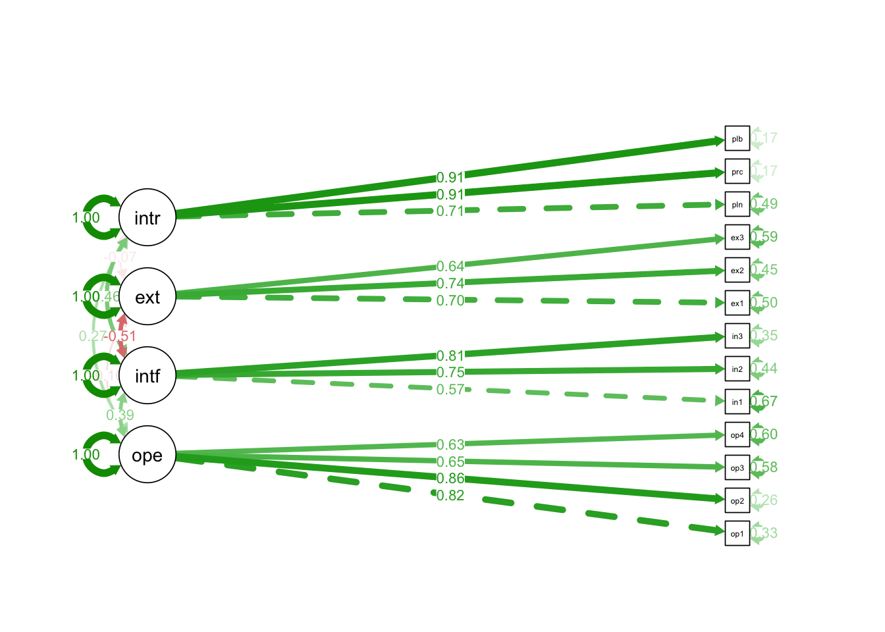
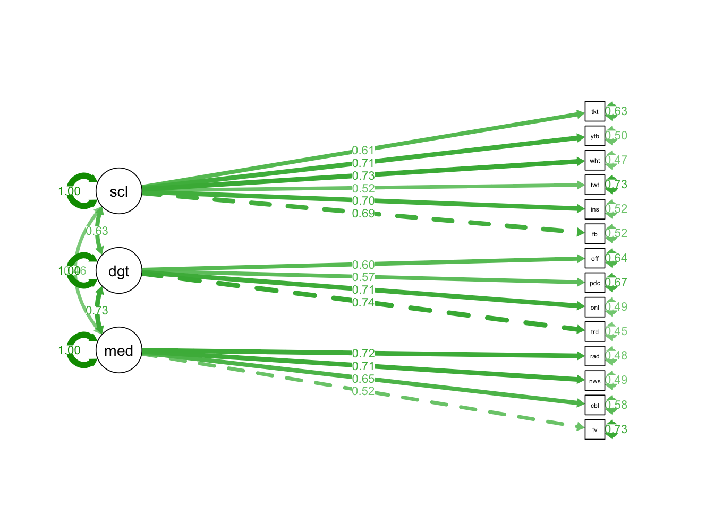
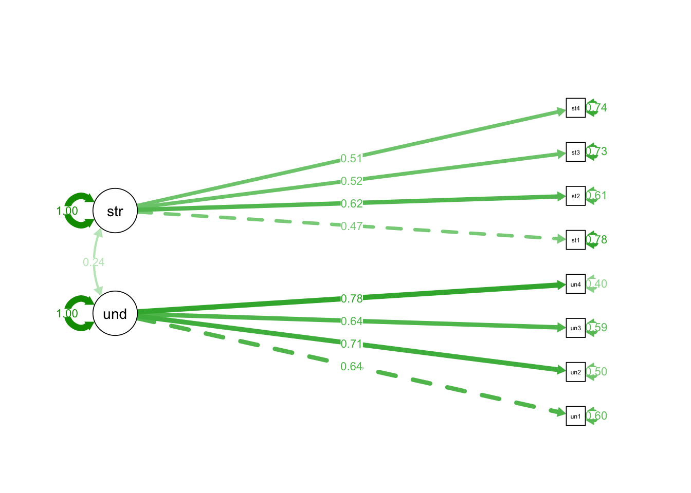
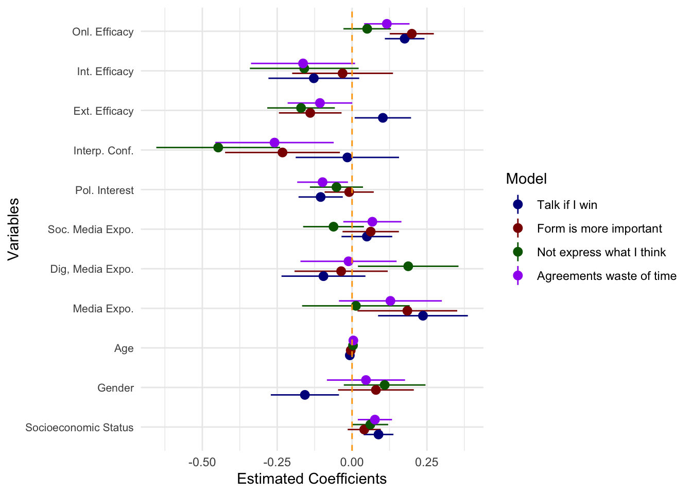
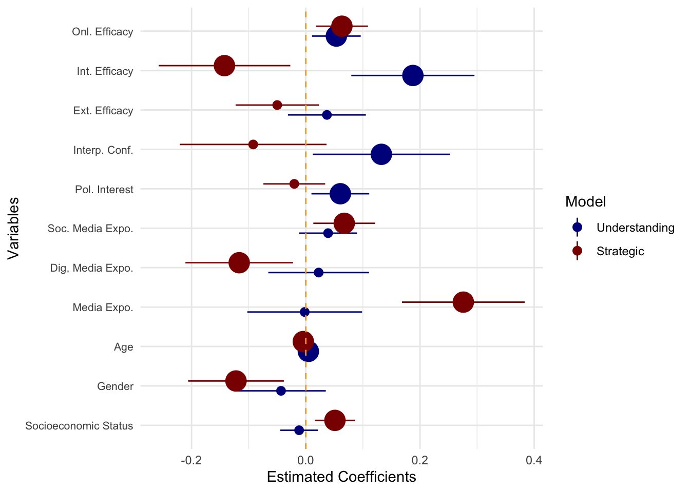

library(haven)
library(knitr)
library(lattice)
library(tidyverse)
library(here)
library(flextable)
library(devtools)
library(lavaan)
library(ggplot2)
library(plm)
library(naniar)
library(purrr)
library(psych)
library(interactions)
library(semPlot)
library(coefplot)Quarto_Paper_MaC
Democracy and social media: Between the dialogue and the strategy
Andrés Scherman1, Pedro Fierro2 and Leo Yuanliang Shan3
1 LEAS at School of Communication and Journalism, Universidad Adolfo Ibáñez.
2 Business School, Universidad Adolfo Ibáñez; and Department of Media and Communication, London School of Economics.
3 School of Journalism and Mass Communication, University of Wisconsin-Madison.
Abstract
This study analyzes the role of traditional news media and social media in public deliberation within democratic systems. Using the concepts of Understanding Orientation (consensus-oriented, communicative rationality) and Strategic Orientation (goal-oriented, instrumental rationality), proposed by Jürgen Habermas, this study looks at the public space in a digital context to explore how the news media can either contribute to the existence of rational communication in the public debate or, conversely, promote interventions of a strategic nature. To estimate the influence of traditional news media and social media on the orientation to engage in dialogue with others within a framework of rationality and equality, this study relies on a two-wave online panel survey conducted in Chile before and after the constitutional referendum, held on September 4, 2022, a period of intense political polarization. The first wave (T1) received 2,117 responses, and the second wave (T2) received 903 responses. Results show that Understanding Orientation is a predictor of political situations linked to public deliberation, such as Political Participation and Political Interest. However, news consumption in both traditional news outlets and social media is not associated with the presence of Understanding Orientation, but rather with Strategic Orientation. These results support a more pessimistic view of the contribution of the news media and social media to creating a rational public sphere, where reason should predominate in interactions between citizens to strengthen democracy.
Methodology
Data
When you click the Render button a document will be generated that includes both content and the output of embedded code. You can embed code like this:
#Import Data
data_w1 <- read_sav("Data_W1.sav")
# ID
data_w1$id <- data_w1$CodPanelistaVariables
# Age
data_w1$age_num <- data_w1$age
# Socioeconomic Status
data_w1$ses <- data_w1$RECO_NSE
# Education
data_w1$educ <- data_w1$P60
# Sex (1=women)
data_w1 <- data_w1%>%
mutate(sex = ifelse(SEX == 2, 1,
ifelse(SEX == 1, 0, NA)))
# Ideology
data_w1$ideology <- ifelse(data_w1$P32 == 99, NA, data_w1$P32)
# Online Political Efficacy
data_w1$ope1 <- data_w1$P59_1
data_w1$ope2 <- data_w1$P59_2
data_w1$ope3 <- data_w1$P59_3
data_w1$ope4 <- data_w1$P59_4
# External Political Efficacy (recode)
data_w1$extef1 <- data_w1$P58_1
data_w1$extef2 <- data_w1$P58_2
data_w1$extef3 <- data_w1$P58_3
# To recode efficacies (intef1, intef3, extef1, extef3, extef4)
data_w1 <- data_w1 %>%
mutate(across(c(extef1, extef2, extef3), ~ 6 - .x))
# Internal Political Efficacy
data_w1$intef1 <- data_w1$P58_4
data_w1$intef2 <- data_w1$P58_5
data_w1$intef3 <- data_w1$P58_6
# Media Exposure
data_w1$tv <- data_w1$P4_1
data_w1$cable <- data_w1$P4_2
data_w1$newspaper <- data_w1$P4_3
data_w1$radio <- data_w1$P4_4
data_w1$tradonline <- data_w1$P4_5
data_w1$online <- data_w1$P4_6
data_w1$podcast <- data_w1$P4_7
data_w1$officialsm <- data_w1$P4_8
# Social Media Exposure
data_w1$fb <- ifelse(data_w1$P5_1 == 99, NA, data_w1$P5_1)
data_w1$insta <- ifelse(data_w1$P5_2 == 99, NA, data_w1$P5_2)
data_w1$twitter <- ifelse(data_w1$P5_3 == 99, NA, data_w1$P5_3)
data_w1$whatsapp <- ifelse(data_w1$P5_4 == 99, NA, data_w1$P5_4)
data_w1$youtube <- ifelse(data_w1$P5_5 == 99, NA, data_w1$P5_5)
data_w1$tiktok <- ifelse(data_w1$P5_6 == 99, NA, data_w1$P5_6)
data_w1$discord <- ifelse(data_w1$P5_7 == 99, NA, data_w1$P5_7)
data_w1$twitch <- ifelse(data_w1$P5_8 == 99, NA, data_w1$P5_8)
# Franja Exposure
data_w1$franja <- data_w1$P6_1
# Social Media Political Use
data_w1$use1 <- data_w1$P25_5
data_w1$use2 <- data_w1$P25_6
data_w1$use3 <- data_w1$P25_7
data_w1$use4 <- data_w1$P25_8
data_w1$use5 <- data_w1$P25_9
data_w1$use6 <- data_w1$P25_10
data_w1$use7 <- data_w1$P25_11
# Interest
data_w1$polint <- data_w1$P21
data_w1$procint <- data_w1$P22
data_w1$plebint <- data_w1$P23
# Interpersonal confidence
data_w1 <- data_w1%>%
mutate(intercon = ifelse(P51 == 2, 1,
ifelse(P51 == 1, 0, NA)))
#Understanding orientation
data_w1$under1 <- data_w1$P48_1
data_w1$under2 <- data_w1$P48_4
data_w1$under3 <- data_w1$P48_5
data_w1$under4 <- data_w1$P48_7
#Strategic orientation
data_w1$strate1 <- data_w1$P49_2
data_w1$strate2 <- data_w1$P49_3
data_w1$strate3 <- data_w1$P49_4
data_w1$strate4 <- data_w1$P49_8Understanding Orientation
Strategic Orientation
Political Efficacy
Political Interest
Media Exposure
Sociodemographic Variables
Analysis
cronbach_ope <- alpha(na.omit(data_w1[c("ope1", "ope2", "ope3", "ope4")]))
cronbach_ope
Reliability analysis
Call: alpha(x = na.omit(data_w1[c("ope1", "ope2", "ope3", "ope4")]))
raw_alpha std.alpha G6(smc) average_r S/N ase mean sd median_r
0.82 0.82 0.79 0.53 4.6 0.0064 2.8 1 0.51
95% confidence boundaries
lower alpha upper
Feldt 0.81 0.82 0.83
Duhachek 0.81 0.82 0.83
Reliability if an item is dropped:
raw_alpha std.alpha G6(smc) average_r S/N alpha se var.r med.r
ope1 0.75 0.75 0.67 0.50 3.0 0.0093 0.0006 0.50
ope2 0.74 0.74 0.66 0.49 2.9 0.0098 0.0006 0.48
ope3 0.80 0.80 0.75 0.58 4.1 0.0074 0.0141 0.52
ope4 0.80 0.80 0.75 0.57 4.0 0.0077 0.0166 0.53
Item statistics
n raw.r std.r r.cor r.drop mean sd
ope1 2117 0.84 0.84 0.78 0.69 2.6 1.3
ope2 2117 0.85 0.85 0.81 0.72 2.9 1.3
ope3 2117 0.77 0.77 0.63 0.58 3.1 1.3
ope4 2117 0.77 0.77 0.64 0.59 2.4 1.3
Non missing response frequency for each item
1 2 3 4 5 miss
ope1 0.28 0.17 0.32 0.13 0.10 0
ope2 0.22 0.16 0.32 0.16 0.14 0
ope3 0.16 0.13 0.33 0.21 0.18 0
ope4 0.34 0.18 0.29 0.10 0.09 0cronbach_intef <- alpha(na.omit(data_w1[c("intef1", "intef2", "intef3")]))
cronbach_intef
Reliability analysis
Call: alpha(x = na.omit(data_w1[c("intef1", "intef2", "intef3")]))
raw_alpha std.alpha G6(smc) average_r S/N ase mean sd median_r
0.71 0.71 0.64 0.45 2.5 0.011 3.5 0.97 0.39
95% confidence boundaries
lower alpha upper
Feldt 0.69 0.71 0.73
Duhachek 0.69 0.71 0.73
Reliability if an item is dropped:
raw_alpha std.alpha G6(smc) average_r S/N alpha se var.r med.r
intef1 0.75 0.75 0.60 0.60 3.0 0.011 NA 0.60
intef2 0.54 0.54 0.37 0.37 1.2 0.020 NA 0.37
intef3 0.56 0.56 0.39 0.39 1.3 0.019 NA 0.39
Item statistics
n raw.r std.r r.cor r.drop mean sd
intef1 2117 0.73 0.74 0.49 0.42 3.5 1.2
intef2 2117 0.84 0.83 0.72 0.59 3.3 1.3
intef3 2117 0.82 0.82 0.71 0.59 3.7 1.2
Non missing response frequency for each item
1 2 3 4 5 miss
intef1 0.08 0.08 0.35 0.22 0.28 0
intef2 0.12 0.11 0.32 0.22 0.23 0
intef3 0.06 0.08 0.28 0.23 0.35 0cronbach_extef <- alpha(na.omit(data_w1[c("extef1", "extef2", "extef3")]))
cronbach_extef
Reliability analysis
Call: alpha(x = na.omit(data_w1[c("extef1", "extef2", "extef3")]))
raw_alpha std.alpha G6(smc) average_r S/N ase mean sd median_r
0.71 0.71 0.62 0.45 2.4 0.011 2.1 1 0.43
95% confidence boundaries
lower alpha upper
Feldt 0.69 0.71 0.73
Duhachek 0.69 0.71 0.73
Reliability if an item is dropped:
raw_alpha std.alpha G6(smc) average_r S/N alpha se var.r med.r
extef1 0.60 0.60 0.43 0.43 1.5 0.017 NA 0.43
extef2 0.59 0.59 0.42 0.42 1.5 0.018 NA 0.42
extef3 0.66 0.66 0.49 0.49 1.9 0.015 NA 0.49
Item statistics
n raw.r std.r r.cor r.drop mean sd
extef1 2117 0.80 0.80 0.64 0.54 2.2 1.3
extef2 2117 0.80 0.81 0.65 0.55 1.9 1.2
extef3 2117 0.79 0.78 0.59 0.50 2.1 1.3
Non missing response frequency for each item
1 2 3 4 5 miss
extef1 0.43 0.18 0.23 0.08 0.08 0
extef2 0.55 0.16 0.18 0.05 0.06 0
extef3 0.47 0.15 0.22 0.07 0.08 0cronbach_media <- alpha(na.omit(data_w1[c("tv", "cable", "newspaper", "radio")]))
cronbach_media
Reliability analysis
Call: alpha(x = na.omit(data_w1[c("tv", "cable", "newspaper", "radio")]))
raw_alpha std.alpha G6(smc) average_r S/N ase mean sd median_r
0.71 0.71 0.68 0.39 2.5 0.01 2.6 1.1 0.37
95% confidence boundaries
lower alpha upper
Feldt 0.69 0.71 0.73
Duhachek 0.69 0.71 0.73
Reliability if an item is dropped:
raw_alpha std.alpha G6(smc) average_r S/N alpha se var.r med.r
tv 0.67 0.68 0.59 0.41 2.1 0.012 0.0055 0.37
cable 0.61 0.61 0.53 0.35 1.6 0.015 0.0169 0.28
newspaper 0.65 0.65 0.58 0.39 1.9 0.013 0.0199 0.36
radio 0.67 0.67 0.59 0.40 2.0 0.012 0.0165 0.37
Item statistics
n raw.r std.r r.cor r.drop mean sd
tv 2117 0.72 0.71 0.57 0.47 3.3 1.5
cable 2117 0.78 0.77 0.68 0.57 2.7 1.5
newspaper 2117 0.71 0.73 0.60 0.50 2.1 1.3
radio 2117 0.72 0.72 0.58 0.47 2.5 1.5
Non missing response frequency for each item
1 2 3 4 5 miss
tv 0.19 0.14 0.19 0.16 0.31 0
cable 0.33 0.16 0.19 0.16 0.17 0
newspaper 0.50 0.17 0.16 0.09 0.08 0
radio 0.37 0.16 0.19 0.14 0.15 0cronbach_digital <- alpha(na.omit(data_w1[c("tradonline", "online", "podcast", "officialsm")]))
cronbach_digital
Reliability analysis
Call: alpha(x = na.omit(data_w1[c("tradonline", "online", "podcast",
"officialsm")]))
raw_alpha std.alpha G6(smc) average_r S/N ase mean sd median_r
0.71 0.72 0.67 0.39 2.5 0.01 2.4 1 0.35
95% confidence boundaries
lower alpha upper
Feldt 0.69 0.71 0.73
Duhachek 0.69 0.71 0.73
Reliability if an item is dropped:
raw_alpha std.alpha G6(smc) average_r S/N alpha se var.r med.r
tradonline 0.63 0.64 0.55 0.37 1.7 0.014 0.0067 0.33
online 0.59 0.59 0.49 0.33 1.5 0.015 0.0015 0.31
podcast 0.68 0.68 0.61 0.42 2.2 0.012 0.0138 0.37
officialsm 0.70 0.70 0.63 0.44 2.3 0.011 0.0163 0.46
Item statistics
n raw.r std.r r.cor r.drop mean sd
tradonline 2117 0.76 0.76 0.65 0.54 2.5 1.4
online 2117 0.80 0.80 0.73 0.60 2.4 1.4
podcast 2117 0.67 0.70 0.54 0.46 1.8 1.2
officialsm 2117 0.70 0.68 0.50 0.43 2.9 1.5
Non missing response frequency for each item
1 2 3 4 5 miss
tradonline 0.36 0.18 0.20 0.15 0.12 0
online 0.42 0.17 0.17 0.13 0.12 0
podcast 0.62 0.14 0.12 0.08 0.05 0
officialsm 0.29 0.13 0.21 0.16 0.21 0cronbach_social <- alpha(na.omit(data_w1[c("fb", "insta", "twitter", "whatsapp", "youtube", "tiktok")]))
cronbach_social
Reliability analysis
Call: alpha(x = na.omit(data_w1[c("fb", "insta", "twitter", "whatsapp",
"youtube", "tiktok")]))
raw_alpha std.alpha G6(smc) average_r S/N ase mean sd median_r
0.82 0.82 0.8 0.42 4.4 0.0077 2.7 1.1 0.43
95% confidence boundaries
lower alpha upper
Feldt 0.8 0.82 0.83
Duhachek 0.8 0.82 0.83
Reliability if an item is dropped:
raw_alpha std.alpha G6(smc) average_r S/N alpha se var.r med.r
fb 0.78 0.78 0.75 0.42 3.6 0.0093 0.0066 0.43
insta 0.77 0.77 0.74 0.41 3.4 0.0096 0.0100 0.39
twitter 0.81 0.81 0.79 0.47 4.4 0.0079 0.0046 0.45
whatsapp 0.77 0.77 0.74 0.40 3.4 0.0098 0.0064 0.42
youtube 0.78 0.78 0.75 0.41 3.5 0.0094 0.0081 0.42
tiktok 0.80 0.79 0.77 0.44 3.9 0.0087 0.0098 0.44
Item statistics
n raw.r std.r r.cor r.drop mean sd
fb 1377 0.73 0.73 0.67 0.59 3.0 1.6
insta 1377 0.76 0.76 0.70 0.63 2.9 1.6
twitter 1377 0.62 0.62 0.50 0.45 2.4 1.6
whatsapp 1377 0.77 0.77 0.72 0.64 2.9 1.6
youtube 1377 0.75 0.75 0.68 0.61 2.5 1.5
tiktok 1377 0.69 0.69 0.59 0.54 2.2 1.5
Non missing response frequency for each item
1 2 3 4 5 miss
fb 0.26 0.14 0.18 0.16 0.27 0
insta 0.31 0.14 0.17 0.15 0.23 0
twitter 0.45 0.11 0.15 0.12 0.17 0
whatsapp 0.32 0.13 0.16 0.11 0.27 0
youtube 0.40 0.14 0.15 0.14 0.17 0
tiktok 0.52 0.11 0.14 0.09 0.14 0cronbach_interest <- alpha(na.omit(data_w1[c("polint", "procint", "plebint")]))
cronbach_interest
Reliability analysis
Call: alpha(x = na.omit(data_w1[c("polint", "procint", "plebint")]))
raw_alpha std.alpha G6(smc) average_r S/N ase mean sd median_r
0.88 0.88 0.84 0.7 7.1 0.0047 3.3 1.3 0.65
95% confidence boundaries
lower alpha upper
Feldt 0.87 0.88 0.89
Duhachek 0.87 0.88 0.89
Reliability if an item is dropped:
raw_alpha std.alpha G6(smc) average_r S/N alpha se var.r med.r
polint 0.91 0.91 0.83 0.83 9.7 0.0040 NA 0.83
procint 0.77 0.77 0.63 0.63 3.3 0.0100 NA 0.63
plebint 0.79 0.79 0.65 0.65 3.8 0.0091 NA 0.65
Item statistics
n raw.r std.r r.cor r.drop mean sd
polint 2117 0.84 0.85 0.70 0.67 2.9 1.4
procint 2117 0.93 0.92 0.89 0.83 3.4 1.5
plebint 2117 0.92 0.91 0.87 0.80 3.6 1.5
Non missing response frequency for each item
1 2 3 4 5 miss
polint 0.25 0.11 0.25 0.20 0.18 0
procint 0.18 0.09 0.19 0.21 0.33 0
plebint 0.16 0.08 0.16 0.18 0.42 0cronbach_under <- alpha(na.omit(data_w1[c("under1", "under2", "under3", "under4")]))
cronbach_under
Reliability analysis
Call: alpha(x = na.omit(data_w1[c("under1", "under2", "under3", "under4")]))
raw_alpha std.alpha G6(smc) average_r S/N ase mean sd median_r
0.74 0.74 0.7 0.42 2.9 0.0091 3.6 0.92 0.43
95% confidence boundaries
lower alpha upper
Feldt 0.72 0.74 0.76
Duhachek 0.72 0.74 0.76
Reliability if an item is dropped:
raw_alpha std.alpha G6(smc) average_r S/N alpha se var.r med.r
under1 0.71 0.71 0.62 0.45 2.4 0.011 0.0029 0.43
under2 0.67 0.66 0.59 0.40 2.0 0.012 0.0165 0.43
under3 0.71 0.71 0.62 0.45 2.4 0.011 0.0010 0.43
under4 0.65 0.65 0.57 0.38 1.8 0.013 0.0133 0.40
Item statistics
n raw.r std.r r.cor r.drop mean sd
under1 2117 0.71 0.72 0.58 0.49 4.2 1.1
under2 2117 0.78 0.77 0.66 0.56 3.7 1.3
under3 2117 0.73 0.72 0.58 0.49 3.0 1.2
under4 2117 0.79 0.79 0.69 0.59 3.6 1.2
Non missing response frequency for each item
1 2 3 4 5 miss
under1 0.05 0.03 0.18 0.16 0.58 0
under2 0.09 0.07 0.25 0.19 0.40 0
under3 0.16 0.11 0.40 0.18 0.15 0
under4 0.09 0.07 0.33 0.21 0.30 0cronbach_strate <- alpha(na.omit(data_w1[c("strate1", "strate2", "strate3", "strate4")]))
cronbach_strate
Reliability analysis
Call: alpha(x = na.omit(data_w1[c("strate1", "strate2", "strate3",
"strate4")]))
raw_alpha std.alpha G6(smc) average_r S/N ase mean sd median_r
0.58 0.58 0.52 0.26 1.4 0.015 2.5 0.87 0.25
95% confidence boundaries
lower alpha upper
Feldt 0.55 0.58 0.61
Duhachek 0.55 0.58 0.61
Reliability if an item is dropped:
raw_alpha std.alpha G6(smc) average_r S/N alpha se var.r med.r
strate1 0.53 0.53 0.43 0.27 1.13 0.018 0.0012 0.26
strate2 0.50 0.49 0.40 0.25 0.98 0.019 0.0048 0.25
strate3 0.53 0.53 0.43 0.27 1.12 0.018 0.0010 0.26
strate4 0.49 0.49 0.40 0.25 0.97 0.019 0.0045 0.25
Item statistics
n raw.r std.r r.cor r.drop mean sd
strate1 2117 0.62 0.65 0.45 0.34 1.9 1.2
strate2 2117 0.68 0.68 0.51 0.38 2.7 1.3
strate3 2117 0.68 0.65 0.45 0.35 2.9 1.4
strate4 2117 0.69 0.68 0.51 0.39 2.4 1.3
Non missing response frequency for each item
1 2 3 4 5 miss
strate1 0.58 0.13 0.20 0.05 0.05 0
strate2 0.26 0.15 0.35 0.12 0.13 0
strate3 0.26 0.12 0.29 0.15 0.18 0
strate4 0.38 0.13 0.31 0.08 0.10 0data_w1_na <- na.omit(data_w1[c("id", "polint", "procint", "plebint", "ope1", "ope2", "ope3", "ope4", "intef1", "intef2", "intef3", "extef1", "extef2", "extef3", "intercon", "tv", "cable", "newspaper", "radio", "tradonline", "online", "podcast", "officialsm","fb", "insta", "twitter", "whatsapp", "youtube", "tiktok", "discord", "twitch", "franja", "use1", "use2", "use3", "use4", "use5", "use6", "use7", "age_num", "ses", "sex", "educ", "under1", "under2", "under3", "under4", "strate1", "strate2", "strate3", "strate4")])
sum(is.na(data_w1_na))[1] 0data_w1_na <- data_w1_na %>%
mutate(across(where(is.labelled), as.numeric))
cfa.model1 <- 'ope =~ ope1 + ope2 + ope3 + ope4
intef =~ intef1 + intef2 + intef3
extef =~ extef1 + extef2 + extef3
interest =~ polint + procint + plebint'
cfa.model2 <- 'media =~ tv + cable + newspaper + radio
digital =~ tradonline + online + podcast + officialsm
social =~ fb + insta + twitter + whatsapp + youtube + tiktok'
cfa.model3 <- 'under =~ under1 + under2 + under3 + under4
strate =~ strate1 + strate2 + strate3 + strate4'
fit_cfa1 <- cfa(cfa.model1, data = data_w1_na)
latent_scores1 <- predict(fit_cfa1)
fit_cfa2 <- cfa(cfa.model2, data = data_w1_na)
latent_scores2 <- predict(fit_cfa2)
fit_cfa3 <- cfa(cfa.model3, data = data_w1_na)
latent_scores3 <- predict(fit_cfa3)
data_w1_scores <- cbind(data_w1_na, latent_scores1, latent_scores2, latent_scores3)Measurement Model
semPaths(fit_cfa1, "std", layout = "tree", rotation = 2,
whatLabels = "std", edge.label.cex = 0.8,
sizeMan = 3, sizeLat = 7, title = TRUE)
semPaths(fit_cfa2, "std", layout = "tree", rotation = 2,
whatLabels = "std", edge.label.cex = 0.8,
sizeMan = 3, sizeLat = 7, title = TRUE)
semPaths(fit_cfa3, "std", layout = "tree", rotation = 2,
whatLabels = "std", edge.label.cex = 0.8,
sizeMan = 3, sizeLat = 7, title = TRUE)
Regressions
model1 <- lm(under ~ ses + sex + age_num + media + digital + social + interest + intercon + extef + intef + ope, data = data_w1_scores)
summary(model1)
Call:
lm(formula = under ~ ses + sex + age_num + media + digital +
social + interest + intercon + extef + intef + ope, data = data_w1_scores)
Residuals:
Min 1Q Median 3Q Max
-2.57506 -0.36864 0.04248 0.41366 1.94858
Coefficients:
Estimate Std. Error t value Pr(>|t|)
(Intercept) -0.087487 0.088665 -0.987 0.32400
ses -0.004347 0.015511 -0.280 0.77935
sex 0.019027 0.035465 0.536 0.59172
age_num 0.001898 0.001298 1.462 0.14406
media 0.071103 0.046712 1.522 0.12825
digital 0.029378 0.043650 0.673 0.50107
social -0.003512 0.026384 -0.133 0.89414
interest 0.197635 0.023025 8.583 < 2e-16 ***
intercon 0.079834 0.053756 1.485 0.13779
extef -0.080243 0.029336 -2.735 0.00633 **
intef 0.079503 0.047217 1.684 0.09251 .
ope 0.114554 0.020611 5.558 3.41e-08 ***
---
Signif. codes: 0 '***' 0.001 '**' 0.01 '*' 0.05 '.' 0.1 ' ' 1
Residual standard error: 0.5846 on 1122 degrees of freedom
Multiple R-squared: 0.2613, Adjusted R-squared: 0.2541
F-statistic: 36.09 on 11 and 1122 DF, p-value: < 2.2e-16model2 <- lm(strate ~ ses + sex + age_num + media + digital + social + interest + intercon + extef + intef + ope, data = data_w1_scores)
summary(model2)
Call:
lm(formula = strate ~ ses + sex + age_num + media + digital +
social + interest + intercon + extef + intef + ope, data = data_w1_scores)
Residuals:
Min 1Q Median 3Q Max
-1.18926 -0.30265 0.02782 0.27132 1.55976
Coefficients:
Estimate Std. Error t value Pr(>|t|)
(Intercept) -0.0651310 0.0641358 -1.016 0.31008
ses 0.0298459 0.0112195 2.660 0.00792 **
sex 0.0143851 0.0256534 0.561 0.57508
age_num -0.0005613 0.0009392 -0.598 0.55018
media 0.0737409 0.0337888 2.182 0.02929 *
digital 0.0048618 0.0315739 0.154 0.87765
social 0.0155346 0.0190848 0.814 0.41583
interest -0.0148682 0.0166552 -0.893 0.37221
intercon -0.1082104 0.0388845 -2.783 0.00548 **
extef -0.0467365 0.0212203 -2.202 0.02784 *
intef -0.0470204 0.0341546 -1.377 0.16888
ope 0.0755189 0.0149087 5.065 4.76e-07 ***
---
Signif. codes: 0 '***' 0.001 '**' 0.01 '*' 0.05 '.' 0.1 ' ' 1
Residual standard error: 0.4229 on 1122 degrees of freedom
Multiple R-squared: 0.07092, Adjusted R-squared: 0.06181
F-statistic: 7.785 on 11 and 1122 DF, p-value: 4.123e-13# Assuming coef_df is already prepared as per previous instructions
# Update the extraction function to avoid spaces in names
get_coef <- function(model, model_name) {
coefs <- summary(model)$coefficients
data.frame(
Term = rownames(coefs),
Estimate = coefs[, "Estimate"],
Std_Error = coefs[, "Std. Error"], # Rename to 'Std_Error'
Model = model_name
)
}
# Apply the function to both models
coef_df1 <- get_coef(model1, "Model 1")
coef_df2 <- get_coef(model2, "Model 2")
# Combine the data frames and remove the intercept
coef_df <- rbind(coef_df1, coef_df2)
coef_df <- coef_df[coef_df$Term != "(Intercept)", ]
# Calculate 95% confidence intervals and determine significance
coef_df <- coef_df %>%
mutate(
Lower_CI = Estimate - 1.645 * Std_Error, # Lower bound of the CI
Upper_CI = Estimate + 1.645 * Std_Error, # Upper bound of the CI
Significant = if_else(Lower_CI > 0 & Upper_CI > 0 | Lower_CI < 0 & Upper_CI < 0, TRUE, FALSE)
)
# Create a mapping of old variable names to new names
name_mapping <- c(
ses = "Socioeconomic Status",
sex = "Gender",
age_num = "Age",
media = "Media Expo.",
digital = "Dig, Media Expo.",
social = "Soc. Media Expo.",
interest = "Pol. Interest",
intercon = "Interp. Conf.",
extef = "Ext. Efficacy",
intef = "Int. Efficacy",
ope = "Onl. Efficacy"
)
# Apply the mapping to the dataframe
coef_df <- coef_df %>%
mutate(Term = factor(Term, levels = names(name_mapping), labels = name_mapping))
# Define a dodge width for better separation
dodge_width <- 0.5
# Create the plot with updated names
ggplot(coef_df, aes(x = Term, y = Estimate, ymin = Lower_CI, ymax = Upper_CI, color = Model, group = Model)) +
geom_pointrange(position = position_dodge(width = dodge_width), aes(size = Significant)) +
geom_hline(yintercept = 0, linetype = "dashed", color = "orange") +
theme_minimal() +
labs(x = "Variables", y = "Estimated Coefficients") +
coord_flip() + # Flips the axes for better visualization of terms
scale_color_manual(values = c("darkblue", "darkred"),
labels = c("Understanding", "Strategic")) + # Set custom colors for each model
scale_size_manual(values = c(0.5, 1.5), guide = FALSE) + # Adjust line width based on significance
theme(
legend.position = "right", # Hide the legend for line size
axis.text.y = element_text(size = 8) # Adjust text size if needed
)Warning: The `guide` argument in `scale_*()` cannot be `FALSE`. This was deprecated in
ggplot2 3.3.4.
ℹ Please use "none" instead.
model2_1 <- lm(strate1 ~ ses + sex + age_num + media + digital + social + interest + intercon + extef + intef + ope, data = data_w1_scores)
summary(model2_1)
Call:
lm(formula = strate1 ~ ses + sex + age_num + media + digital +
social + interest + intercon + extef + intef + ope, data = data_w1_scores)
Residuals:
Min 1Q Median 3Q Max
-1.8078 -0.8611 -0.4065 0.8093 3.6162
Coefficients:
Estimate Std. Error t value Pr(>|t|)
(Intercept) 2.024671 0.172995 11.704 < 2e-16 ***
ses 0.088309 0.030263 2.918 0.00359 **
sex -0.157543 0.069196 -2.277 0.02299 *
age_num -0.007486 0.002533 -2.955 0.00319 **
media 0.236788 0.091140 2.598 0.00950 **
digital -0.095501 0.085165 -1.121 0.26237
social 0.049481 0.051478 0.961 0.33666
interest -0.104875 0.044925 -2.334 0.01975 *
intercon -0.015691 0.104884 -0.150 0.88111
extef 0.102832 0.057238 1.797 0.07267 .
intef -0.127700 0.092126 -1.386 0.16598
ope 0.175655 0.040214 4.368 1.37e-05 ***
---
Signif. codes: 0 '***' 0.001 '**' 0.01 '*' 0.05 '.' 0.1 ' ' 1
Residual standard error: 1.141 on 1122 degrees of freedom
Multiple R-squared: 0.0797, Adjusted R-squared: 0.07068
F-statistic: 8.834 on 11 and 1122 DF, p-value: 3.331e-15model2_2 <- lm(strate2 ~ ses + sex + age_num + media + digital + social + interest + intercon + extef + intef + ope, data = data_w1_scores)
summary(model2_2)
Call:
lm(formula = strate2 ~ ses + sex + age_num + media + digital +
social + interest + intercon + extef + intef + ope, data = data_w1_scores)
Residuals:
Min 1Q Median 3Q Max
-2.6595 -1.0918 0.1060 0.7258 3.2237
Coefficients:
Estimate Std. Error t value Pr(>|t|)
(Intercept) 2.750595 0.192185 14.312 < 2e-16 ***
ses 0.040685 0.033620 1.210 0.2265
sex 0.079711 0.076871 1.037 0.3000
age_num -0.004419 0.002814 -1.570 0.1166
media 0.184645 0.101249 1.824 0.0685 .
digital -0.036421 0.094612 -0.385 0.7003
social 0.062293 0.057188 1.089 0.2763
interest -0.009673 0.049908 -0.194 0.8464
intercon -0.232256 0.116519 -1.993 0.0465 *
extef -0.139695 0.063587 -2.197 0.0282 *
intef -0.031669 0.102345 -0.309 0.7571
ope 0.199520 0.044674 4.466 8.77e-06 ***
---
Signif. codes: 0 '***' 0.001 '**' 0.01 '*' 0.05 '.' 0.1 ' ' 1
Residual standard error: 1.267 on 1122 degrees of freedom
Multiple R-squared: 0.0559, Adjusted R-squared: 0.04665
F-statistic: 6.04 on 11 and 1122 DF, p-value: 1.173e-09model2_3 <- lm(strate3 ~ ses + sex + age_num + media + digital + social + interest + intercon + extef + intef + ope, data = data_w1_scores)
summary(model2_3)
Call:
lm(formula = strate3 ~ ses + sex + age_num + media + digital +
social + interest + intercon + extef + intef + ope, data = data_w1_scores)
Residuals:
Min 1Q Median 3Q Max
-2.55167 -1.18015 0.07474 1.07228 2.83517
Coefficients:
Estimate Std. Error t value Pr(>|t|)
(Intercept) 2.512255 0.207300 12.119 < 2e-16 ***
ses 0.060994 0.036264 1.682 0.092859 .
sex 0.108827 0.082917 1.312 0.189628
age_num 0.003122 0.003036 1.029 0.303918
media 0.012810 0.109213 0.117 0.906647
digital 0.187510 0.102053 1.837 0.066419 .
social -0.061888 0.061686 -1.003 0.315944
interest -0.052043 0.053833 -0.967 0.333877
intercon -0.446935 0.125683 -3.556 0.000392 ***
extef -0.170322 0.068588 -2.483 0.013164 *
intef -0.159619 0.110395 -1.446 0.148488
ope 0.050513 0.048188 1.048 0.294756
---
Signif. codes: 0 '***' 0.001 '**' 0.01 '*' 0.05 '.' 0.1 ' ' 1
Residual standard error: 1.367 on 1122 degrees of freedom
Multiple R-squared: 0.0354, Adjusted R-squared: 0.02594
F-statistic: 3.743 on 11 and 1122 DF, p-value: 2.822e-05model2_4 <- lm(strate4 ~ ses + sex + age_num + media + digital + social + interest + intercon + extef + intef + ope, data = data_w1_scores)
summary(model2_4)
Call:
lm(formula = strate4 ~ ses + sex + age_num + media + digital +
social + interest + intercon + extef + intef + ope, data = data_w1_scores)
Residuals:
Min 1Q Median 3Q Max
-2.1903 -1.2713 0.2060 0.6673 3.0888
Coefficients:
Estimate Std. Error t value Pr(>|t|)
(Intercept) 2.054059 0.198245 10.361 <2e-16 ***
ses 0.076373 0.034680 2.202 0.0279 *
sex 0.046446 0.079295 0.586 0.5582
age_num 0.004312 0.002903 1.485 0.1378
media 0.128086 0.104442 1.226 0.2203
digital -0.011806 0.097596 -0.121 0.9037
social 0.067790 0.058992 1.149 0.2507
interest -0.098500 0.051482 -1.913 0.0560 .
intercon -0.258985 0.120193 -2.155 0.0314 *
extef -0.107280 0.065592 -1.636 0.1022
intef -0.163686 0.105573 -1.550 0.1213
ope 0.116130 0.046083 2.520 0.0119 *
---
Signif. codes: 0 '***' 0.001 '**' 0.01 '*' 0.05 '.' 0.1 ' ' 1
Residual standard error: 1.307 on 1122 degrees of freedom
Multiple R-squared: 0.03437, Adjusted R-squared: 0.0249
F-statistic: 3.63 on 11 and 1122 DF, p-value: 4.539e-05# Apply the function to both models
coef_strate1 <- get_coef(model2_1, "Model S1")
coef_strate2 <- get_coef(model2_2, "Model S2")
coef_strate3 <- get_coef(model2_3, "Model S3")
coef_strate4 <- get_coef(model2_4, "Model S4")
# Combine the data frames and remove the intercept
coef_strate <- rbind(coef_strate1, coef_strate2, coef_strate3, coef_strate4)
coef_strate <- coef_strate[coef_strate$Term != "(Intercept)", ]
# Calculate 95% confidence intervals and determine significance
coef_strate <- coef_strate %>%
mutate(
Lower_CI = Estimate - 1.645 * Std_Error, # Lower bound of the CI
Upper_CI = Estimate + 1.645 * Std_Error, # Upper bound of the CI
Significant = if_else(Lower_CI > 0 & Upper_CI > 0 | Lower_CI < 0 & Upper_CI < 0, TRUE, FALSE)
)
# Apply the mapping to the dataframe
coef_strate <- coef_strate %>%
mutate(Term = factor(Term, levels = names(name_mapping), labels = name_mapping))
# Define a dodge width for better separation
dodge_width <- 0.5
# Create the plot with updated names
ggplot(coef_strate, aes(x = Term, y = Estimate, ymin = Lower_CI, ymax = Upper_CI, color = Model, group = Model)) +
geom_pointrange(position = position_dodge(width = dodge_width)) +
geom_hline(yintercept = 0, linetype = "dashed", color = "orange") +
theme_minimal() +
labs(x = "Variables", y = "Estimated Coefficients") +
coord_flip() + # Flips the axes for better visualization of terms
scale_color_manual(
values = c("darkblue", "darkred","darkgreen", "purple"),
labels = c("Talk if I win", "Form is more important", "Not express what I think", "Agreements waste of time")) + # Set custom colors for each model
scale_size_manual(values = c(0.5, 1.5), guide = FALSE) + # Adjust line width based on significance
theme(
legend.position = "right",
axis.text.y = element_text(size = 8) # Adjust text size if needed
)
```
Alternative models
data_w1_scores$undersum <- (data_w1_scores$under1+data_w1_scores$under2+data_w1_scores$under3+data_w1_scores$under4)/4
data_w1_scores$stratesum <- (data_w1_scores$strate1+data_w1_scores$strate2+data_w1_scores$strate3+data_w1_scores$strate4)/4
data_w1_scores$mediasum <- (data_w1_scores$tv+data_w1_scores$cable+data_w1_scores$newspaper+data_w1_scores$radio)/4
data_w1_scores$digitalsum <-(data_w1_scores$tradonline+data_w1_scores$online+data_w1_scores$podcast+data_w1_scores$officialsm)/4
data_w1_scores$socialsum <- (data_w1_scores$fb+data_w1_scores$insta+data_w1_scores$twitter+data_w1_scores$whatsapp+data_w1_scores$youtube+data_w1_scores$tiktok)/6
data_w1_scores$extefsum <- (data_w1_scores$extef1+data_w1_scores$extef2+data_w1_scores$extef3)/3
data_w1_scores$intefsum <- (data_w1_scores$intef1+data_w1_scores$intef2+data_w1_scores$intef3)/3
data_w1_scores$opesum <- (data_w1_scores$ope1+data_w1_scores$ope2+data_w1_scores$ope3+data_w1_scores$ope4)/4Regressions
model_a1 <- lm(undersum ~ ses + sex + age_num + mediasum + digitalsum + socialsum + polint + intercon + extefsum + intefsum + opesum, data = data_w1_scores)
summary(model_a1)
Call:
lm(formula = undersum ~ ses + sex + age_num + mediasum + digitalsum +
socialsum + polint + intercon + extefsum + intefsum + opesum,
data = data_w1_scores)
Residuals:
Min 1Q Median 3Q Max
-3.7442 -0.5240 0.0544 0.6268 2.5909
Coefficients:
Estimate Std. Error t value Pr(>|t|)
(Intercept) 2.030579 0.191775 10.588 < 2e-16 ***
ses -0.032749 0.022025 -1.487 0.137323
sex 0.023171 0.050892 0.455 0.648976
age_num 0.003904 0.001886 2.070 0.038658 *
mediasum 0.072964 0.027529 2.650 0.008152 **
digitalsum 0.044280 0.033217 1.333 0.182794
socialsum -0.003325 0.027952 -0.119 0.905347
polint 0.159450 0.020231 7.881 7.62e-15 ***
intercon 0.132121 0.077396 1.707 0.088086 .
extefsum -0.093423 0.026991 -3.461 0.000558 ***
intefsum 0.110869 0.031466 3.523 0.000443 ***
opesum 0.179158 0.026154 6.850 1.21e-11 ***
---
Signif. codes: 0 '***' 0.001 '**' 0.01 '*' 0.05 '.' 0.1 ' ' 1
Residual standard error: 0.8403 on 1122 degrees of freedom
Multiple R-squared: 0.2523, Adjusted R-squared: 0.245
F-statistic: 34.42 on 11 and 1122 DF, p-value: < 2.2e-16model_a2 <- lm(stratesum ~ ses + sex + age_num + mediasum + digitalsum + socialsum + polint + intercon + extefsum + intefsum + opesum, data = data_w1_scores)
summary(model_a2)
Call:
lm(formula = stratesum ~ ses + sex + age_num + mediasum + digitalsum +
socialsum + polint + intercon + extefsum + intefsum + opesum,
data = data_w1_scores)
Residuals:
Min 1Q Median 3Q Max
-2.09354 -0.63014 0.05855 0.56001 3.00885
Coefficients:
Estimate Std. Error t value Pr(>|t|)
(Intercept) 2.013568 0.195005 10.326 < 2e-16 ***
ses 0.070481 0.022396 3.147 0.00169 **
sex 0.019065 0.051749 0.368 0.71264
age_num -0.001469 0.001918 -0.766 0.44381
mediasum 0.091536 0.027993 3.270 0.00111 **
digitalsum 0.028691 0.033777 0.849 0.39583
socialsum 0.014811 0.028423 0.521 0.60240
polint -0.046889 0.020572 -2.279 0.02284 *
intercon -0.243804 0.078700 -3.098 0.00200 **
extefsum -0.044184 0.027446 -1.610 0.10771
intefsum -0.048129 0.031996 -1.504 0.13281
opesum 0.137534 0.026594 5.172 2.75e-07 ***
---
Signif. codes: 0 '***' 0.001 '**' 0.01 '*' 0.05 '.' 0.1 ' ' 1
Residual standard error: 0.8545 on 1122 degrees of freedom
Multiple R-squared: 0.07398, Adjusted R-squared: 0.0649
F-statistic: 8.149 on 11 and 1122 DF, p-value: 7.779e-14Replicating with wave 3
#Import Data
data_w3 <- read_sav("Data_W3.sav")
# ID
data_w3$id <- data_w3$CodPanelista#Understanding orientation
data_w3$under_w3_1 <- data_w3$P48_1
data_w3$under_w3_2 <- data_w3$P48_2
data_w3$under_w3_3 <- data_w3$P48_3
data_w3$under_w3_4 <- data_w3$P48_4
data_w3$under_w3_5 <- data_w3$P48_5
data_w3$under_w3_6 <- data_w3$P48_6
data_w3$under_w3_7 <- data_w3$P48_7
data_w3$under_w3_8 <- data_w3$P48_8
#Strategic orientation
data_w3$strate_w3_1 <- data_w3$P49_1
data_w3$strate_w3_2 <- data_w3$P49_2
data_w3$strate_w3_3 <- data_w3$P49_3
data_w3$strate_w3_4 <- data_w3$P49_4
data_w3$strate_w3_5 <- data_w3$P49_5
data_w3$strate_w3_6 <- data_w3$P49_6
data_w3$strate_w3_7 <- data_w3$P49_7
data_w3$strate_w3_8 <- data_w3$P49_8# Assuming 'id' is your key variable for merging
data_w3_selected <- data_w3 %>%
select(id, starts_with("strate_w3_"), starts_with("under_w3_")) %>%
drop_na()# Merge dataframes
merged_data <- data_w1_scores %>%
left_join(data_w3_selected, by = "id") %>%
drop_na()cronbach_ope_m <- alpha(na.omit(merged_data[c("ope1", "ope2", "ope3", "ope4")]))
cronbach_ope_m
Reliability analysis
Call: alpha(x = na.omit(merged_data[c("ope1", "ope2", "ope3", "ope4")]))
raw_alpha std.alpha G6(smc) average_r S/N ase mean sd median_r
0.85 0.85 0.82 0.59 5.7 0.011 2.7 1.1 0.56
95% confidence boundaries
lower alpha upper
Feldt 0.83 0.85 0.87
Duhachek 0.83 0.85 0.87
Reliability if an item is dropped:
raw_alpha std.alpha G6(smc) average_r S/N alpha se var.r med.r
ope1 0.79 0.79 0.71 0.55 3.7 0.017 0.0021 0.57
ope2 0.77 0.77 0.69 0.53 3.4 0.018 0.0008 0.54
ope3 0.84 0.84 0.79 0.63 5.1 0.013 0.0140 0.57
ope4 0.84 0.84 0.79 0.63 5.1 0.013 0.0143 0.58
Item statistics
n raw.r std.r r.cor r.drop mean sd
ope1 486 0.86 0.86 0.82 0.74 2.5 1.3
ope2 486 0.88 0.88 0.85 0.77 2.8 1.3
ope3 486 0.79 0.79 0.67 0.62 3.0 1.3
ope4 486 0.79 0.79 0.67 0.62 2.4 1.3
Non missing response frequency for each item
1 2 3 4 5 miss
ope1 0.30 0.17 0.32 0.11 0.10 0
ope2 0.23 0.17 0.33 0.14 0.12 0
ope3 0.18 0.13 0.33 0.20 0.17 0
ope4 0.33 0.18 0.30 0.11 0.08 0cronbach_intef_m <- alpha(na.omit(merged_data[c("intef1", "intef2", "intef3")]))
cronbach_intef_m
Reliability analysis
Call: alpha(x = na.omit(merged_data[c("intef1", "intef2", "intef3")]))
raw_alpha std.alpha G6(smc) average_r S/N ase mean sd median_r
0.74 0.74 0.68 0.49 2.9 0.021 3.5 1 0.42
95% confidence boundaries
lower alpha upper
Feldt 0.7 0.74 0.78
Duhachek 0.7 0.74 0.78
Reliability if an item is dropped:
raw_alpha std.alpha G6(smc) average_r S/N alpha se var.r med.r
intef1 0.78 0.78 0.64 0.64 3.6 0.020 NA 0.64
intef2 0.59 0.59 0.42 0.42 1.5 0.037 NA 0.42
intef3 0.57 0.57 0.40 0.40 1.4 0.039 NA 0.40
Item statistics
n raw.r std.r r.cor r.drop mean sd
intef1 486 0.75 0.75 0.52 0.46 3.4 1.2
intef2 486 0.84 0.84 0.74 0.62 3.3 1.3
intef3 486 0.84 0.85 0.75 0.64 3.6 1.2
Non missing response frequency for each item
1 2 3 4 5 miss
intef1 0.09 0.09 0.35 0.19 0.27 0
intef2 0.12 0.10 0.34 0.21 0.23 0
intef3 0.07 0.08 0.30 0.22 0.32 0cronbach_extef_m <- alpha(na.omit(merged_data[c("extef1", "extef2", "extef3")]))
cronbach_extef_m
Reliability analysis
Call: alpha(x = na.omit(merged_data[c("extef1", "extef2", "extef3")]))
raw_alpha std.alpha G6(smc) average_r S/N ase mean sd median_r
0.75 0.75 0.67 0.51 3.1 0.019 2.1 1.1 0.49
95% confidence boundaries
lower alpha upper
Feldt 0.71 0.75 0.79
Duhachek 0.71 0.75 0.79
Reliability if an item is dropped:
raw_alpha std.alpha G6(smc) average_r S/N alpha se var.r med.r
extef1 0.65 0.65 0.49 0.49 1.9 0.031 NA 0.49
extef2 0.65 0.65 0.48 0.48 1.9 0.032 NA 0.48
extef3 0.71 0.71 0.55 0.55 2.4 0.026 NA 0.55
Item statistics
n raw.r std.r r.cor r.drop mean sd
extef1 486 0.82 0.83 0.69 0.60 2.2 1.3
extef2 486 0.82 0.83 0.70 0.60 2.0 1.3
extef3 486 0.81 0.80 0.63 0.55 2.2 1.4
Non missing response frequency for each item
1 2 3 4 5 miss
extef1 0.44 0.16 0.23 0.09 0.08 0
extef2 0.55 0.14 0.17 0.06 0.07 0
extef3 0.48 0.12 0.20 0.10 0.09 0cronbach_media_m <- alpha(na.omit(merged_data[c("tv", "cable", "newspaper", "radio")]))
cronbach_media_m
Reliability analysis
Call: alpha(x = na.omit(merged_data[c("tv", "cable", "newspaper", "radio")]))
raw_alpha std.alpha G6(smc) average_r S/N ase mean sd median_r
0.73 0.74 0.69 0.41 2.8 0.02 2.7 1.1 0.39
95% confidence boundaries
lower alpha upper
Feldt 0.69 0.73 0.77
Duhachek 0.69 0.73 0.77
Reliability if an item is dropped:
raw_alpha std.alpha G6(smc) average_r S/N alpha se var.r med.r
tv 0.69 0.69 0.61 0.43 2.3 0.025 0.0046 0.42
cable 0.65 0.65 0.57 0.39 1.9 0.028 0.0112 0.36
newspaper 0.66 0.66 0.58 0.39 1.9 0.027 0.0129 0.37
radio 0.70 0.69 0.61 0.43 2.3 0.024 0.0064 0.42
Item statistics
n raw.r std.r r.cor r.drop mean sd
tv 486 0.74 0.73 0.59 0.50 3.4 1.5
cable 486 0.78 0.77 0.66 0.57 2.6 1.5
newspaper 486 0.75 0.76 0.65 0.55 2.1 1.3
radio 486 0.72 0.72 0.58 0.49 2.5 1.4
Non missing response frequency for each item
1 2 3 4 5 miss
tv 0.19 0.11 0.18 0.19 0.33 0
cable 0.34 0.16 0.19 0.16 0.15 0
newspaper 0.48 0.16 0.19 0.10 0.07 0
radio 0.37 0.16 0.19 0.16 0.12 0cronbach_digital_m <- alpha(na.omit(merged_data[c("tradonline", "online", "podcast", "officialsm")]))
cronbach_digital_m
Reliability analysis
Call: alpha(x = na.omit(merged_data[c("tradonline", "online", "podcast",
"officialsm")]))
raw_alpha std.alpha G6(smc) average_r S/N ase mean sd median_r
0.76 0.76 0.72 0.45 3.3 0.018 2.3 1 0.42
95% confidence boundaries
lower alpha upper
Feldt 0.73 0.76 0.8
Duhachek 0.73 0.76 0.8
Reliability if an item is dropped:
raw_alpha std.alpha G6(smc) average_r S/N alpha se var.r med.r
tradonline 0.70 0.70 0.62 0.44 2.4 0.024 0.00556 0.43
online 0.65 0.66 0.56 0.39 1.9 0.027 0.00019 0.38
podcast 0.72 0.73 0.65 0.47 2.6 0.022 0.00837 0.43
officialsm 0.75 0.75 0.67 0.49 2.9 0.020 0.00969 0.52
Item statistics
n raw.r std.r r.cor r.drop mean sd
tradonline 486 0.78 0.77 0.66 0.58 2.4 1.4
online 486 0.82 0.82 0.76 0.65 2.3 1.4
podcast 486 0.72 0.75 0.61 0.53 1.8 1.2
officialsm 486 0.74 0.72 0.56 0.50 2.7 1.4
Non missing response frequency for each item
1 2 3 4 5 miss
tradonline 0.36 0.17 0.21 0.16 0.09 0
online 0.40 0.19 0.17 0.14 0.09 0
podcast 0.60 0.15 0.13 0.08 0.03 0
officialsm 0.32 0.14 0.21 0.18 0.14 0cronbach_social_m <- alpha(na.omit(merged_data[c("fb", "insta", "twitter", "whatsapp", "youtube", "tiktok")]))
cronbach_social_m
Reliability analysis
Call: alpha(x = na.omit(merged_data[c("fb", "insta", "twitter", "whatsapp",
"youtube", "tiktok")]))
raw_alpha std.alpha G6(smc) average_r S/N ase mean sd median_r
0.85 0.85 0.83 0.48 5.5 0.011 2.6 1.2 0.48
95% confidence boundaries
lower alpha upper
Feldt 0.83 0.85 0.87
Duhachek 0.83 0.85 0.87
Reliability if an item is dropped:
raw_alpha std.alpha G6(smc) average_r S/N alpha se var.r med.r
fb 0.82 0.82 0.80 0.48 4.6 0.013 0.0060 0.50
insta 0.81 0.81 0.78 0.46 4.3 0.014 0.0082 0.45
twitter 0.84 0.84 0.82 0.52 5.4 0.011 0.0034 0.52
whatsapp 0.81 0.81 0.78 0.46 4.2 0.014 0.0063 0.48
youtube 0.82 0.82 0.80 0.47 4.5 0.013 0.0074 0.50
tiktok 0.83 0.83 0.81 0.49 4.9 0.012 0.0074 0.50
Item statistics
n raw.r std.r r.cor r.drop mean sd
fb 486 0.75 0.75 0.69 0.63 3.0 1.6
insta 486 0.80 0.80 0.75 0.69 2.8 1.6
twitter 486 0.67 0.67 0.57 0.52 2.4 1.6
whatsapp 486 0.81 0.81 0.77 0.70 2.9 1.7
youtube 486 0.76 0.77 0.70 0.65 2.5 1.5
tiktok 486 0.72 0.73 0.64 0.59 2.1 1.5
Non missing response frequency for each item
1 2 3 4 5 miss
fb 0.28 0.11 0.16 0.18 0.27 0
insta 0.33 0.13 0.17 0.16 0.21 0
twitter 0.48 0.09 0.13 0.14 0.15 0
whatsapp 0.36 0.11 0.14 0.11 0.28 0
youtube 0.41 0.14 0.14 0.15 0.16 0
tiktok 0.59 0.09 0.09 0.09 0.13 0cronbach_interest_m <- alpha(na.omit(merged_data[c("polint", "procint", "plebint")]))
cronbach_interest_m
Reliability analysis
Call: alpha(x = na.omit(merged_data[c("polint", "procint", "plebint")]))
raw_alpha std.alpha G6(smc) average_r S/N ase mean sd median_r
0.87 0.87 0.84 0.7 6.9 0.01 3.2 1.4 0.63
95% confidence boundaries
lower alpha upper
Feldt 0.85 0.87 0.89
Duhachek 0.85 0.87 0.89
Reliability if an item is dropped:
raw_alpha std.alpha G6(smc) average_r S/N alpha se var.r med.r
polint 0.92 0.92 0.85 0.85 11.0 0.0076 NA 0.85
procint 0.77 0.77 0.63 0.63 3.4 0.0207 NA 0.63
plebint 0.76 0.76 0.61 0.61 3.2 0.0216 NA 0.61
Item statistics
n raw.r std.r r.cor r.drop mean sd
polint 486 0.83 0.84 0.68 0.65 2.9 1.5
procint 486 0.92 0.92 0.89 0.81 3.3 1.5
plebint 486 0.93 0.92 0.90 0.82 3.5 1.5
Non missing response frequency for each item
1 2 3 4 5 miss
polint 0.30 0.10 0.22 0.20 0.18 0
procint 0.21 0.09 0.19 0.20 0.31 0
plebint 0.19 0.08 0.14 0.18 0.40 0cronbach_under_m <- alpha(na.omit(merged_data[c("under_w3_1", "under_w3_2", "under_w3_3", "under_w3_4", "under_w3_5", "under_w3_6", "under_w3_7", "under_w3_8")]))
cronbach_under_m
Reliability analysis
Call: alpha(x = na.omit(merged_data[c("under_w3_1", "under_w3_2", "under_w3_3",
"under_w3_4", "under_w3_5", "under_w3_6", "under_w3_7", "under_w3_8")]))
raw_alpha std.alpha G6(smc) average_r S/N ase mean sd median_r
0.86 0.86 0.86 0.44 6.4 0.0093 3.7 0.83 0.44
95% confidence boundaries
lower alpha upper
Feldt 0.85 0.86 0.88
Duhachek 0.85 0.86 0.88
Reliability if an item is dropped:
raw_alpha std.alpha G6(smc) average_r S/N alpha se var.r med.r
under_w3_1 0.85 0.86 0.85 0.46 5.9 0.0100 0.0119 0.46
under_w3_2 0.86 0.86 0.86 0.47 6.2 0.0094 0.0114 0.46
under_w3_3 0.85 0.85 0.84 0.45 5.6 0.0104 0.0152 0.43
under_w3_4 0.84 0.85 0.84 0.44 5.5 0.0107 0.0140 0.45
under_w3_5 0.86 0.86 0.85 0.47 6.1 0.0097 0.0088 0.45
under_w3_6 0.84 0.84 0.84 0.43 5.2 0.0113 0.0116 0.43
under_w3_7 0.83 0.84 0.83 0.42 5.1 0.0115 0.0095 0.43
under_w3_8 0.84 0.84 0.83 0.43 5.2 0.0112 0.0107 0.43
Item statistics
n raw.r std.r r.cor r.drop mean sd
under_w3_1 486 0.65 0.67 0.60 0.55 4.3 1.0
under_w3_2 486 0.62 0.62 0.53 0.49 3.7 1.2
under_w3_3 486 0.70 0.71 0.65 0.60 3.9 1.1
under_w3_4 486 0.74 0.74 0.68 0.64 3.8 1.2
under_w3_5 486 0.64 0.63 0.56 0.51 3.1 1.2
under_w3_6 486 0.79 0.79 0.76 0.71 3.7 1.2
under_w3_7 486 0.81 0.80 0.79 0.73 3.6 1.2
under_w3_8 486 0.78 0.78 0.75 0.70 3.6 1.2
Non missing response frequency for each item
1 2 3 4 5 miss
under_w3_1 0.03 0.02 0.19 0.18 0.58 0
under_w3_2 0.08 0.05 0.29 0.22 0.36 0
under_w3_3 0.04 0.04 0.29 0.28 0.36 0
under_w3_4 0.08 0.04 0.27 0.23 0.38 0
under_w3_5 0.13 0.11 0.42 0.19 0.15 0
under_w3_6 0.07 0.08 0.30 0.24 0.32 0
under_w3_7 0.08 0.06 0.31 0.25 0.30 0
under_w3_8 0.07 0.06 0.38 0.20 0.29 0cronbach_strate_m <- alpha(na.omit(merged_data[c("strate_w3_1", "strate_w3_2", "strate_w3_3", "strate_w3_4", "strate_w3_5", "strate_w3_6", "strate_w3_7", "strate_w3_8")]))
cronbach_strate_m
Reliability analysis
Call: alpha(x = na.omit(merged_data[c("strate_w3_1", "strate_w3_2",
"strate_w3_3", "strate_w3_4", "strate_w3_5", "strate_w3_6",
"strate_w3_7", "strate_w3_8")]))
raw_alpha std.alpha G6(smc) average_r S/N ase mean sd median_r
0.76 0.76 0.76 0.29 3.2 0.016 2.7 0.8 0.3
95% confidence boundaries
lower alpha upper
Feldt 0.73 0.76 0.79
Duhachek 0.73 0.76 0.79
Reliability if an item is dropped:
raw_alpha std.alpha G6(smc) average_r S/N alpha se var.r med.r
strate_w3_1 0.74 0.74 0.73 0.29 2.8 0.018 0.0099 0.31
strate_w3_2 0.74 0.74 0.73 0.28 2.8 0.018 0.0081 0.29
strate_w3_3 0.74 0.74 0.73 0.29 2.8 0.018 0.0105 0.31
strate_w3_4 0.73 0.73 0.72 0.28 2.7 0.019 0.0116 0.29
strate_w3_5 0.76 0.76 0.74 0.31 3.1 0.017 0.0067 0.31
strate_w3_6 0.73 0.73 0.72 0.28 2.7 0.019 0.0088 0.29
strate_w3_7 0.74 0.74 0.73 0.29 2.9 0.018 0.0093 0.31
strate_w3_8 0.72 0.72 0.71 0.27 2.6 0.019 0.0084 0.30
Item statistics
n raw.r std.r r.cor r.drop mean sd
strate_w3_1 486 0.60 0.60 0.52 0.45 2.6 1.2
strate_w3_2 486 0.61 0.62 0.54 0.47 2.1 1.3
strate_w3_3 486 0.61 0.61 0.52 0.45 2.8 1.3
strate_w3_4 486 0.65 0.65 0.57 0.50 2.8 1.3
strate_w3_5 486 0.51 0.51 0.40 0.34 3.5 1.3
strate_w3_6 486 0.64 0.64 0.58 0.50 2.2 1.3
strate_w3_7 486 0.59 0.59 0.51 0.43 3.3 1.4
strate_w3_8 486 0.69 0.68 0.63 0.55 2.4 1.3
Non missing response frequency for each item
1 2 3 4 5 miss
strate_w3_1 0.29 0.13 0.38 0.10 0.09 0
strate_w3_2 0.51 0.12 0.25 0.07 0.06 0
strate_w3_3 0.25 0.14 0.36 0.10 0.15 0
strate_w3_4 0.23 0.14 0.35 0.14 0.14 0
strate_w3_5 0.10 0.08 0.34 0.19 0.30 0
strate_w3_6 0.44 0.14 0.24 0.09 0.08 0
strate_w3_7 0.15 0.09 0.34 0.15 0.27 0
strate_w3_8 0.38 0.12 0.29 0.11 0.09 0merged_data <- merged_data %>%
mutate(across(where(is.labelled), as.numeric))
cfa.model_w3_1 <- 'ope_w3 =~ ope1 + ope2 + ope3 + ope4
intef_w3 =~ intef1 + intef2 + intef3
extef_w3 =~ extef1 + extef2 + extef3
interest_w3 =~ polint + procint + plebint'
cfa.model_w3_2 <- 'media_w3 =~ tv + cable + newspaper + radio
digital_w3 =~ tradonline + online + podcast + officialsm
social_w3 =~ fb + insta + twitter + whatsapp + youtube + tiktok'
cfa.model_w3_3 <- 'under_w3 =~ under_w3_1 + under_w3_2 + under_w3_3 + under_w3_4 + under_w3_5 + under_w3_6 + under_w3_7 + under_w3_8
strate_w3 =~ strate_w3_1 + strate_w3_2 + strate_w3_3 + strate_w3_4 + strate_w3_5 + strate_w3_6 + strate_w3_7 + strate_w3_8'
fit_cfa_w3_1 <- cfa(cfa.model_w3_1, data = merged_data)
latent_scores_w3_1 <- predict(fit_cfa_w3_1)
fit_cfa_w3_2 <- cfa(cfa.model_w3_2, data = merged_data)
latent_scores_w3_2 <- predict(fit_cfa_w3_2)
fit_cfa_w3_3 <- cfa(cfa.model_w3_3, data = merged_data)
latent_scores_w3_3 <- predict(fit_cfa_w3_3)
merged_data <- cbind(merged_data, latent_scores_w3_1, latent_scores_w3_2, latent_scores_w3_3)model_w3_1 <- lm(under_w3 ~ ses + sex + age_num + media_w3 + digital_w3 + social_w3 + interest_w3 + intercon + extef_w3 + intef_w3 + ope_w3, data = merged_data)
summary(model_w3_1)
Call:
lm(formula = under_w3 ~ ses + sex + age_num + media_w3 + digital_w3 +
social_w3 + interest_w3 + intercon + extef_w3 + intef_w3 +
ope_w3, data = merged_data)
Residuals:
Min 1Q Median 3Q Max
-1.75970 -0.33250 0.03831 0.35806 1.27286
Coefficients:
Estimate Std. Error t value Pr(>|t|)
(Intercept) -0.162455 0.117364 -1.384 0.16695
ses -0.011682 0.020023 -0.583 0.55988
sex -0.043346 0.047668 -0.909 0.36364
age_num 0.004513 0.001779 2.537 0.01151 *
media_w3 -0.001889 0.061104 -0.031 0.97535
digital_w3 0.022543 0.053595 0.421 0.67423
social_w3 0.039046 0.030793 1.268 0.20541
interest_w3 0.060523 0.030755 1.968 0.04966 *
intercon 0.132380 0.073052 1.812 0.07060 .
extef_w3 0.037030 0.041461 0.893 0.37224
intef_w3 0.187589 0.065574 2.861 0.00441 **
ope_w3 0.053559 0.025935 2.065 0.03945 *
---
Signif. codes: 0 '***' 0.001 '**' 0.01 '*' 0.05 '.' 0.1 ' ' 1
Residual standard error: 0.5057 on 474 degrees of freedom
Multiple R-squared: 0.177, Adjusted R-squared: 0.1579
F-statistic: 9.265 on 11 and 474 DF, p-value: 3.971e-15model_w3_2 <- lm(strate_w3 ~ ses + sex + age_num + media_w3 + digital_w3 + social_w3 + interest_w3 + intercon + extef_w3 + intef_w3 + ope_w3, data = merged_data)
summary(model_w3_2)
Call:
lm(formula = strate_w3 ~ ses + sex + age_num + media_w3 + digital_w3 +
social_w3 + interest_w3 + intercon + extef_w3 + intef_w3 +
ope_w3, data = merged_data)
Residuals:
Min 1Q Median 3Q Max
-1.71343 -0.35332 0.02565 0.31123 1.66757
Coefficients:
Estimate Std. Error t value Pr(>|t|)
(Intercept) 0.095511 0.125466 0.761 0.4469
ses 0.051044 0.021406 2.385 0.0175 *
sex -0.122222 0.050959 -2.398 0.0169 *
age_num -0.004348 0.001902 -2.286 0.0227 *
media_w3 0.275902 0.065323 4.224 2.88e-05 ***
digital_w3 -0.116575 0.057295 -2.035 0.0424 *
social_w3 0.067353 0.032918 2.046 0.0413 *
interest_w3 -0.020140 0.032878 -0.613 0.5405
intercon -0.092104 0.078096 -1.179 0.2388
extef_w3 -0.050013 0.044323 -1.128 0.2597
intef_w3 -0.142436 0.070101 -2.032 0.0427 *
ope_w3 0.063258 0.027725 2.282 0.0230 *
---
Signif. codes: 0 '***' 0.001 '**' 0.01 '*' 0.05 '.' 0.1 ' ' 1
Residual standard error: 0.5406 on 474 degrees of freedom
Multiple R-squared: 0.1352, Adjusted R-squared: 0.1151
F-statistic: 6.736 on 11 and 474 DF, p-value: 1.528e-10# Apply the function to both models
coef_df_w3_1 <- get_coef(model_w3_1, "Model w3_1")
coef_df_w3_2 <- get_coef(model_w3_2, "Model w3_2")
# Combine the data frames and remove the intercept
coef_df_w3 <- rbind(coef_df_w3_1, coef_df_w3_2)
coef_df_w3 <- coef_df_w3[coef_df_w3$Term != "(Intercept)", ]
# Calculate 95% confidence intervals and determine significance
coef_df_w3 <- coef_df_w3 %>%
mutate(
Lower_CI = Estimate - 1.645 * Std_Error, # Lower bound of the CI
Upper_CI = Estimate + 1.645 * Std_Error, # Upper bound of the CI
Significant = if_else(Lower_CI > 0 & Upper_CI > 0 | Lower_CI < 0 & Upper_CI < 0, TRUE, FALSE)
)
# Create a mapping of old variable names to new names
name_mapping_w3 <- c(
ses = "Socioeconomic Status",
sex = "Gender",
age_num = "Age",
media_w3 = "Media Expo.",
digital_w3 = "Dig, Media Expo.",
social_w3 = "Soc. Media Expo.",
interest_w3 = "Pol. Interest",
intercon = "Interp. Conf.",
extef_w3 = "Ext. Efficacy",
intef_w3 = "Int. Efficacy",
ope_w3 = "Onl. Efficacy"
)
# Apply the mapping to the dataframe
coef_df_w3 <- coef_df_w3 %>%
mutate(Term = factor(Term, levels = names(name_mapping_w3), labels = name_mapping_w3))
# Define a dodge width for better separation
dodge_width <- 0.5
# Create the plot with updated names
ggplot(coef_df_w3, aes(x = Term, y = Estimate, ymin = Lower_CI, ymax = Upper_CI, color = Model, group = Model)) +
geom_pointrange(position = position_dodge(width = dodge_width), aes(size = Significant)) +
geom_hline(yintercept = 0, linetype = "dashed", color = "orange") +
theme_minimal() +
labs(x = "Variables", y = "Estimated Coefficients") +
coord_flip() + # Flips the axes for better visualization of terms
scale_color_manual(values = c("darkblue", "darkred"),
labels = c("Understanding", "Strategic")) + # Set custom colors for each model
scale_size_manual(values = c(0.5, 1.5), guide = FALSE) + # Adjust line width based on significance
theme(
legend.position = "right", # Hide the legend for line size
axis.text.y = element_text(size = 8) # Adjust text size if needed
)